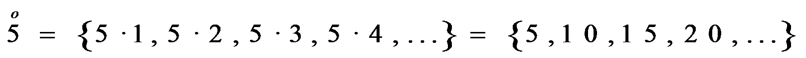

Divisibilidad y números enteros
Múltiplos y divisores
Cuando la división de “a” entre “b” es exacta, decimos que “a” es múltiplo de “b”, o “b” es divisor de “a”, o “a” es divisible por “b”.
Ejemplo: 3 es un divisor de 15 y 15 es un múltiplo de 3.
Lo denotamos: Div (15) o
Calculamos los múltiplos de un número multiplicando este número por otros. Ejemplo:

Encontramos todos los divisores de un número dividiendo por los números hasta que el cociente es mayor que el divisor. Cuando una división es exacta, el cociente también es un divisor.
Ejemplo: 20 : 5 = 4 → 4 y 5 son divisores de 20.
Div(20) = {1, 20, 2, 10, 4, 5} = {1, 2, 4, 5, 10, 20}
Un número es primo cuando tiene exactamente dos divisores: 1 y él mismo. Si no es primo es compuesto.
Ejemplo: 20 es compuesto y 13 es primo.
Ejercicios:
1.- Calcula lo cinco primeros múltiplos de 12 y 13
2.- Calcula todos los divisores de 28 y 42
3.- Decide si son primos o compuestos: 71, 221 y 233
Soluciones:
1.- 12→{12,24,36,48,60} 13→{13,26,39,52,65}
2.- Div(28) = {1,2,4,7,14,28} Div(42) = {1,2,3,6,7,14,21,42}
3.- 71 y 233 son primos y 221 es compuesto porque 221 = 13·17
Obra publicada con Licencia Creative Commons Reconocimiento No comercial Compartir igual 3.0